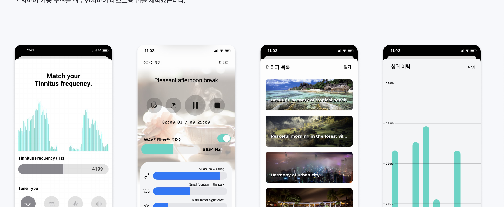
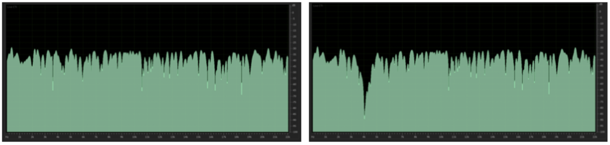

I led the planning, beta testing, and clinical analysis of a service that lets users identify their own tinnitus tone, then relieves it with notch therapy audio — music with just that frequency band removed.
Grow the domestic and global tinnitus relief market · increase active users · validate tinnitus relief through notch therapy
Targeted noise-removal tech that deletes only the frequency range a user selects, mixed across a range of frequency-band audio sources
Find your tinnitus tone by selecting its type and volume, play and mix it with simple controls, and choose from roughly 20 tinnitus therapy tracks
Stand apart from other domestic tinnitus services with a notch therapy-based relief solution that makes the product's value clear to potential customers.
Targeted noise-removal technology
Delivers a tinnitus relief solution
Six therapy sound sources are mixed together, then the exact frequency band of the user's tinnitus is notched out before the audio plays on their device.
If:
Then:
They'd feel more relief than with a fixed audio track, and fewer would drop off partway through
We shaped the service direction using a survey of roughly 300 hardware product users, plus research, internal testing, and GA data.
Problem: existing control apps had a high drop-off rate
Swap control-only functions for the tinnitus relief features customers actually wanted
Problem: customers with hearing loss have a strong need for tinnitus relief
Build up hearing-test data to personalize the service, and let users track how much relief they're getting with a tinnitus journal
Problem: most available tinnitus sounds were fixed, limiting user choice
Let users find their own tinnitus sound by choosing its type and frequency range, plus add features to schedule and mix therapy sounds
| Stage | Details |
|---|---|
| Research | SWOT analysis, market research |
| Define | Set service goals, finalize features |
| Plan | Screen design (flows, spec docs), technical review and sign-off |
| Design | MVP-based prototyping design |
| Beta Test | Write round 1/2 plans, recruit and select testers, run rounds 1 and 2, draw conclusions |
| Analysis | Analyze clinical results |
We partnered with the manager of a tinnitus community forum to recruit testers who actually experience tinnitus, and gathered detailed feedback through one-on-one follow-up.
Find your tinnitus tone (frequency and tone-type matching) · home screen (WAVE Filter™ playback) · therapy list · listening history (bar chart) · timer settings — we built the test app around the MVP, prioritizing working features over polish.

We validated relief by combining participants' self-written tinnitus journals with interview findings — and the longer people kept listening to the therapy, the more of them reported feeling relief.

Left) Before energy removal
Right) After energy removal
We measured whether sound energy was actually removed at the frequency band each user identified. The right-hand (after) graph shows a clear drop in energy at that band.
Subjective changes like "it feels much better" are hard to capture in numbers, so we asked 20 participants to fill out a daily "tinnitus journal" through Google Forms — letting us check qualitative relief directly.
| Participant | Recording Period | Days Recorded | Qualitative Relief Check |
|---|---|---|---|
| Test0201 | 8.18 – 9.9 | 14 days | ○ |
| Test0204 | 8.18 – 9.7 | 18 days | ○ |
| Test0210 | 8.18 – 9.9 | 16 days | ○ |
| Test0211 | 8.18 – 9.7 | 18 days | ○ |
| Test0216 | 8.18 – 9.9 | 17 days | ○ |
| Other 15 participants | 8.18 – 9.9 | Varies by participant | - |
We compiled the daily Google Forms entries and used them as supporting data behind the "relief right after listening" and "masking level" response rates above.
Reported relief: 33%
Reported relief: 50%
Reported relief: 46%
Reported relief: 77%
Participants were 55% women and 45% men; by age, 30s made up 45%, 40s 30%, 20s 20%, and teens 5%. The daily tinnitus journal let us put a number on the subjective feeling of "relief" and track psychological change alongside it.